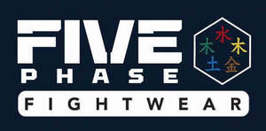

Trade Mark Journal No.2025/039 26 September 2025
UK00004264302 15 September 2025 (9,18,25,28)

- Class 9
- Eye protection wear for sports; Helmets for use in sports; Sports helmets; Goggles for use in sports; Goggles for sports; Sports goggles; Sports (Goggles for -); Protective helmets for sports; Protective helmets for use in sports; Helmets (Protective -) for sports; Sports (Protective helmets for -); Protective sports helmets; Protection helmets for sports; Spectacles for sports; Headwear for sporting activities for protection against injury; Shin guards for protection against injury [other than sports articles or parts of sports suits].
- Class 18
- Holdalls for sports clothing; Sport bags; Bags for sports clothing.
- Class 25
- Sports wear; Clothes for sport; Sport shoes; Sport shirts; Footwear for sport; Footwear for use in sport; Boots for sport; Leisure wear; Headgear for wear; Clothing for wear in wrestling games; Clothing for leisure wear; Sport coats; Clothes for sports; Exercise wear; Shoes for casual wear; Clothing for sports; Sports clothing; Sports garments; Clothing for wear in judo practices; Sports clothing [other than golf gloves]; Sports jerseys and breeches for sports; Sports shoes; Casual wear; Sports pants; Sports headgear [other than helmets]; Footwear not for sports; Sports footwear; Footwear for sports; Sports shirts; Jackets being sports clothing; Ladies wear; Sports jackets; Sports vests; Sports jerseys; Sports socks; Sports over uniforms; Sports singlets; Breeches for wear; Combative sports uniforms; Formal wear; Swim wear for gentlemen and ladies; Sports bras; Moisture-wicking sports pants; Head wear; Infant wear; Children's wear; Cleats for attachment to sports shoes; Athletic clothing; Sports caps and hats; Athletics footwear.
- Class 28
- Punchbags; Gloves for sports; Sport hoops; Protective face masks for use in the sport of fencing; Sport balls; Protectors for elbows for use when participating in the sport of cricket; Rings for sports; Athletic protective wrist pads for cycling; Chest protectors adapted for playing the sport of taekwondo; Knee guards for sports use; Body protectors for sports use; Knee pads for sports use; Harnesses for use in sports; Leg guards adapted for playing sport; Sports equipment; Athletic protective sportswear; Athletic protective knee pads for cycling; Face guards for sports use; Pads for use in sports; Face masks for sports; Gloves made specifically for use in playing sports; Paddings (Protective -) [parts of sports suits]; Protective paddings [parts of sports suits].
Mr Anthony James Morgan